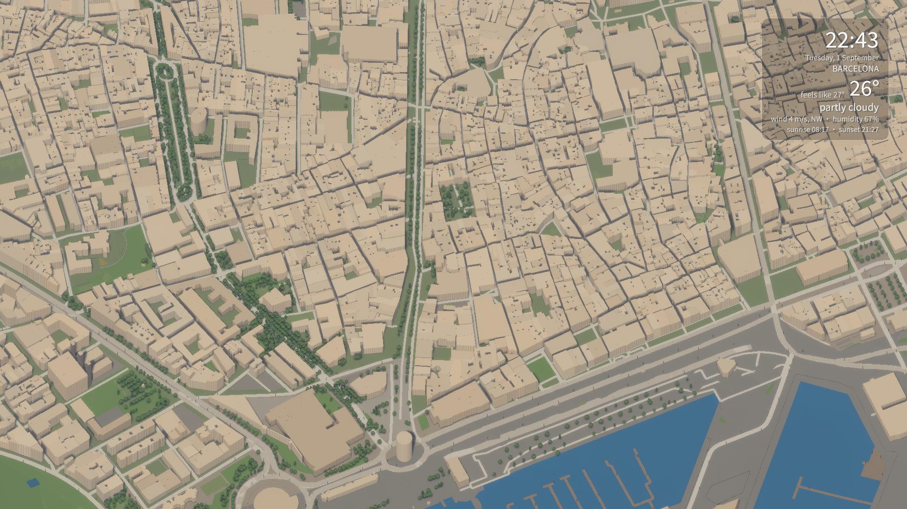
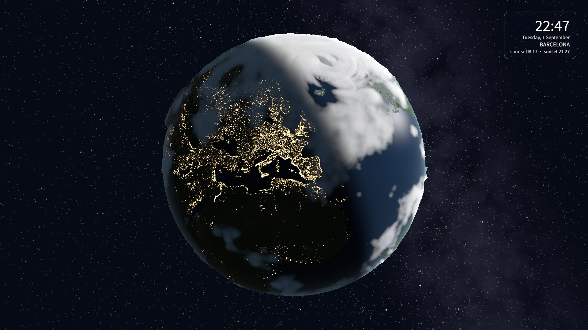
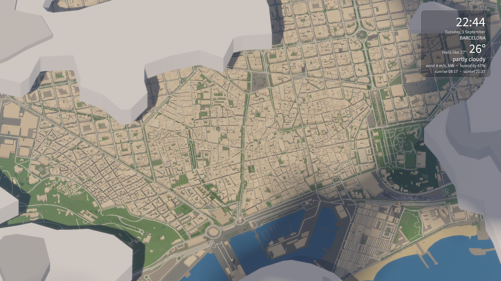
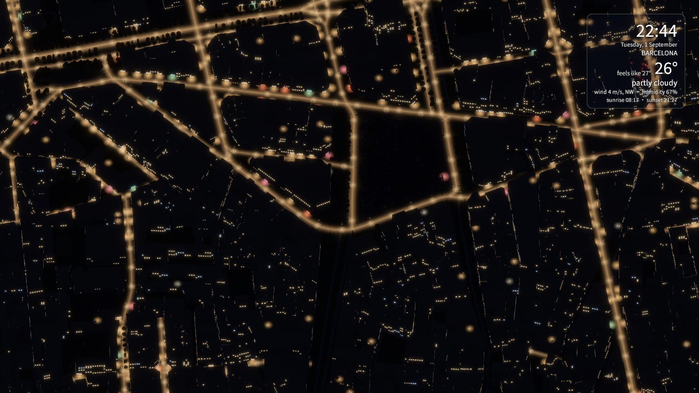

Your city
129 cities ship with the app. Anywhere else downloads from OpenStreetMap in a couple of minutes and is then yours offline — buildings, streets, parks, water, trees and real terrain height.
Weatherland builds your city in 3D from OpenStreetMap, lights it by the real position of the sun, and puts live forecast weather over it. Then it sits behind your desktop icons and keeps going.
Windows 10 and 11 · free for 7 days, no account · one-time purchase

Two scenes
129 cities ship with the app. Anywhere else downloads from OpenStreetMap in a couple of minutes and is then yours offline — buildings, streets, parks, water, trees and real terrain height.
Earth from orbit, with real cloud cover, snow line, ocean depth and city lights taken from NASA night imagery. Behind it, the real star catalogue, turning at sidereal rate.
Cloud cover, rain, snow and wind come from Open-Meteo and MET Norway, refreshed hourly. When it rains outside your window, it rains on your desktop.

Weather you can check against the window
They have volume and height, so they drop shadows onto the streets below and drift across them as the front moves through. Cover, wind direction and rain all come from the hourly forecast for the place you picked.

Sunlight from the real sun
Sun height sets the palette from dawn to dusk, its azimuth sets the direction of every shadow, and its closeness to the horizon sets how warm the light is. None of it is a preset.

How it works
No account, no subscription, nothing phoning home. The key is checked on your own machine, so it keeps working on a laptop with no internet at all.
The whole app, every feature, for seven days. It settles in behind your desktop icons on first launch.
Card payment in euros or dollars. The key arrives by email, usually within minutes.
Open settings from the tray icon, paste the key, and that is the end of it. Verified offline, never expires.
Price
€4.99 one-time
Windows 10 or 11, 64-bit, and a graphics card supporting Vulkan or DirectX 12 — anything from the last decade or so. The scene is drawn by a dedicated renderer, not by a browser.
Frame rate and detail are adjustable, and battery mode slows or pauses the scene on laptops. The wallpaper stops drawing when nothing can see it.
129 cities ship with the app. If yours is not among them, type its name into settings and it downloads from OpenStreetMap in a couple of minutes, then stays on your disk for good.
Only to fetch the forecast, roughly once an hour, and to download a city you have not used before. Everything else runs offline, the licence check included.
Write to the address in the footer with your payment details and it will be sent by hand. Keys are issued by a person, not only by a machine.
Within 14 days, for any reason, just ask. The seven-day trial exists so that this should rarely be necessary.